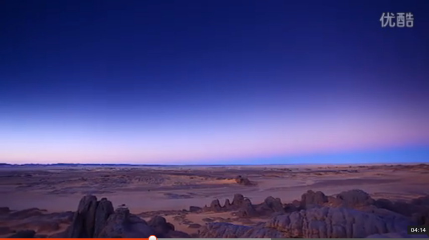
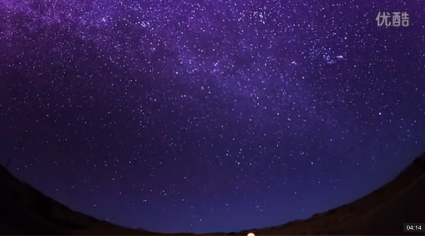

撒哈拉的故事
作者： 三毛
当看到一张撒哈拉沙漠的照片，感应到前世的乡愁，于是就决定搬去住。而“流浪文学”也成为了一种文化现象。
沙漠中的饭店
描述她与外国丈夫之间生活在国外所经历的一段关于生活的轶事趣闻。
粉丝的三种别称：春雨,尼龙线,鱼翅。
中国菜绝对是最棒的！ 讲究色香味，我爱中国。
结婚记
讲述荷西与自己在沙漠法院结婚的故事。
结婚前一晚荷西带着三毛去了电影院看了一场好电影《希腊左巴》算做跟单身的日子的告别。
荷西为她准备的结婚礼物：是凭借自己对三毛的了解，再加上自己精心准备一天才找到的一副完整的骆驼头骨骨架，
不仅用心而且做到了投其所好，做到这两点就是最完美的礼物【感悟：礼物不一定在意价值，而在意的是用心】。
两人走着去沙漠法院见证那一神圣时刻，最后完成了神圣的使命。
悬壶济世
讲述的是关于在沙漠旁的小镇里面行医弄药的事情，感觉就是不可相信，居然敢自己单独对人随便用药。
像他们那种过着基本与世隔绝的生活，估计无论是什么药可能都会对他们产生效果，她居然就如此自信相信自己可以
悬壶济世了！我只能对这种事抱有保留态度。
娃娃新娘
讲述那些穷苦的远离城市文明的撒哈拉威人的一些结婚习俗。揭露了这个地区人们的相关陋习，女孩8-10岁左右就会结
婚，而且都是父母之命。另外他们以胖为美，结婚必须要像打架一样挣扎等等。
所以如果我是个女人，我应该庆幸自己出生在这个时代的中国，这是个全社会都在讲求男女平等，女士优先的社会。所
以也就没有什么太大的不幸了，我们应该学会发现这种生活中的点滴幸福。
荒山之夜
讲述两人一起去沙漠寻找化石所发生的一段惊险的故事。记得以前自己看过这篇文章，当时对这篇文章的感受就是沙漠
历险记，作者同时也利用到自己关于星座方面的知识帮助自己逃离沙漠遭遇的这么一段故事。但是此次再看，了解了人
物设定以及这篇故事所发生的背景知识，我只是觉得这种人太疯狂了，完全不值得去效仿。
但是沙漠的星空以及关于它的一些美景还是令我比较向往的。从本文也让我了解到 到这种地方玩，切记不要太相信陌生
人，这些地方换句话来说都是法律管不到的地方，一旦出了什么事只能自己认倒霉。
沙漠观浴记
描述三毛在沙漠地区看当地人洗澡所展现在她眼前的情况。这里描绘的是1970年代左右时期的非洲人的生活状况，比较
污秽不堪，但是现在是什么情况就不得而知了，只是以前在实习的时候听说非洲生活条件依旧很艰苦。 我想说自己只是
很倾向去非洲看那里的美景，但是对非洲人的这种比较原始的生活还是不怎么感兴趣的。
爱的寻求
讲述撒哈拉威人沙仑追求自己所谓的幸福的经历，好像那个骗子就是他活着唯一认定的目标。最后得到结论：“飞蛾在扑
火时，一定是极快乐幸福的。”
其中我对三毛直接对着沙仑揭露真相，而且是那样的露骨，直接感受就是素质低下，情商低下，对她的印象感觉就是总觉
得自己高别人一等，总是可以直白的说出那种伤人的话，感觉她也不过如此。
芳邻
记述自己与沙漠邻居之间发生的事情，主要说的就是邻居不仅会过来借各种东西而且不懂得感恩，最后非常讽刺的说了一
句：“感谢这些邻居，使得自己在沙漠的日子变得五光十色，再也不知寂寞的滋味。”
【越来越想不明白，为什么一个台湾人要去这种地方体验这种生活，我还是抱着自己的观点，这种地方去看一看旅游旅游玩
玩就好，要让我生活在那里我绝对不愿意。】
素人渔夫
讲述两个人在周末开车穿过沙漠来到大海边捕鱼然后再卖鱼的经历。
里面所描述的美景：“身后是连绵不断神秘而又寂静的沙漠，眼前是惊涛裂岸的大海和乱石，碧蓝的天空没有一丝云雾，
成群的海鸟飞来飞去，偶尔发出一声叫声，更衬出了四周的空寂。”面对此番美景，一个人想起了《天地一沙鸥》这本书
里所讲的一个境界，另一个则幻想自己是《雷恩的女儿》这本书所描写的主人公。
死果 [关于"巫术"]
讲述关于她在沙漠里面捡到了一个精美的小铜牌的故事，这个铜牌后来说是被下了最恶毒的符咒的东西，只要戴上它，它
就会拿人本身健康上的缺点作为攻击，可以将小毛病转化成厉鬼来取人的性命。这种所谓的巫术，可能有的时候科学真的
无法提供解释，但是它确实就是存在着。所以我们对这个世界还是应该多抱着敬畏的态度，其实我们对它真的知之甚少。
另外 从这件事也能得到启示：“我们最好不要为了贪图小便宜，而去乱捡什么东西，搞不好真的会丧命！”。
天梯 [关于“考驾照”]
没想到在上个世纪70-80年代的撒哈拉沙漠地区(隶属于西班牙)的撒哈拉威人 靠驾照也需要从【笔考到车考再到路考】走下
完整的一整个流程，才能够取得驾照。
冬天车考要注意：前几辆车切记最好不要上，等别人把引擎用热了，再上，这样就不太会熄火。
冬天路考要注意：起步之前，起步之后以及一些小的细节一定要把握好。
另外 背诵 好交通规则 对于上路也很有益处，可以降低自己被罚款的可能性。
白手成家
讲述自己从有去沙漠生活这个念头到付诸实施再到接触到最原始简陋的房子，再到经过两个人的打拼渐渐装饰起自己美丽
的小屋，直到把这间小屋粉饰成白色，再加入一点书香气息，再加入一点艺术与音乐的气息，再加入一抹绿，使这个房子
变成了自己梦想所拥有的房子。这一整个算是白手起家的奋斗过程。
白手起家：最难熬的就是一开始刚起步的时候，所需要付出的无比的毅力，要使得自己能够坚持下去，适应下去。
当一个地方被自己弄的风生水起之后，通常也需要通过外人来证明自己，否则往往看不出自己的价值。
【现在我有点想明白了：为什么一个台湾人要去这种地方体验这种生活！这种完全白手起家打造自己全新生活的另一种生
活方式，确实很值得体验一把！】
收魂记
讲述在沙漠中旅行，所遇到的美景，拍照在当地人看来是个摄魂的东西。
---- 沙漠中的美景 ----
如梦如幻又如鬼魅似的海市蜃楼，连绵平滑温柔的如同女人胴体的沙丘，迎面如雨似的狂风沙，焦裂的大地，想天空伸长
着手臂呼唤嘶叫的仙人掌，千万年前枯干了的河床，黑色的山峦，深蓝到冻住了的长空，满布乱石的荒野... ...
沙巴军曹
讲述在1975年前后自己所遇到的沙漠军团的军曹沙巴的故事。这个时候北边的摩洛哥和南边的毛里塔尼亚要瓜分西属撒哈拉，
而沙漠自己的部落又组成了游击队流亡在阿尔及利亚，当时的沙漠军团所驻扎的西属撒哈拉还是隶属于西班牙政府，但是最终
政府决定丢弃这块土地。而军曹原本十六年前与撒哈拉威人有着血海深仇，在当下这个不稳定的时局中他却毅然以自己的生命
保护了几个撒哈拉威人的小孩。展现了人性真善美的一面。
搭车客
讲述买了车之后，在自己住的地方与荷西上班的地方之间一百多公里的柏油路上开车载人的经历。在这里通过载人遇到了各色
各样的人(搭车客)，也算是一种经历与体验。
修百世才能同舟，修千世才能共枕。能够遇到一些人一些事也算是有缘分。
哑奴
永远都不要觉得自己是这个世界上最不幸的人，如果你这么想了，那只能证明你还没有见过那种真正活得不幸的人。就想哑奴
和他的孩子们，他们生来就注定了是奴隶，是别人的私有财产可以任意买卖。
而我们是出生在中国，伴随着整个国家的发展与进步，我们的家庭背景也不算很差，可以说如果我们懂得知足懂得感恩，那么
我们就永远是生活在幸福里面的。
哭泣的骆驼【整个从219-259共40页的故事真的有种看大片的感觉】
整个故事采用倒序的方式阐述，事后回忆起来只记得这短短几日的经历是一场令我当时能够狂叫出来的惨剧。哭/笑/爱/憎 等各
种情感全部都交织在这段感人的经历里。
故事主人公：巴西里[撒哈拉威游击队的精神领袖]，沙伊达[巴西里之妻]，奥菲鲁阿[撒哈拉威警察,巴西里之弟]。
事件起因：本地非洲人要独立，摩洛哥人要下来，毛里塔尼亚人要上来，大家都是为着抢位于西属撒哈拉地区的这个大磷矿。
故事概要：讲述发生在西撒哈拉地区上的一场权利争斗，撒哈拉威游击队代表撒哈拉威人的利益宣扬要民族自决(也即：独立)；
西班牙政府原本对该地区有着殖民地的管辖权，但是为形势所逼也准备放弃了对这块土地的管辖，最后渐渐的演变
成支持撒哈拉威人独立(因为他想着既然这块肉自己吃不到也不能送给别人吃)；摩洛哥人则是怀抱野心一心想要瓜分
这块地区，同时在附近的毛里塔尼亚以及阿尔及利亚也对这块土地留有野心，只是不如摩洛哥人那么强烈。于是一
场发生在西属撒哈拉地区的争战戏在这里就打了起来。
里面充满了人性中美的一面也展现出人性中恶的一面，有正义之战也有侵略战斗。最终故事以一个凄美的结局而告
终，真的感觉为正义之师感到由衷的惋惜。
附录 [作者与家人间的书信]
= 看了几篇书信最大的感触就是：可怜天下父母心，孩子在父母眼中胜于自己的生命。
= 《圣经》中所说的 “万物皆有时”，其实讲求的就是一个“缘”字，所以强求生死聚散都是愚人的事情，所以关于结婚等事情，放
下焦急的心态吧，只能顺其自然。

